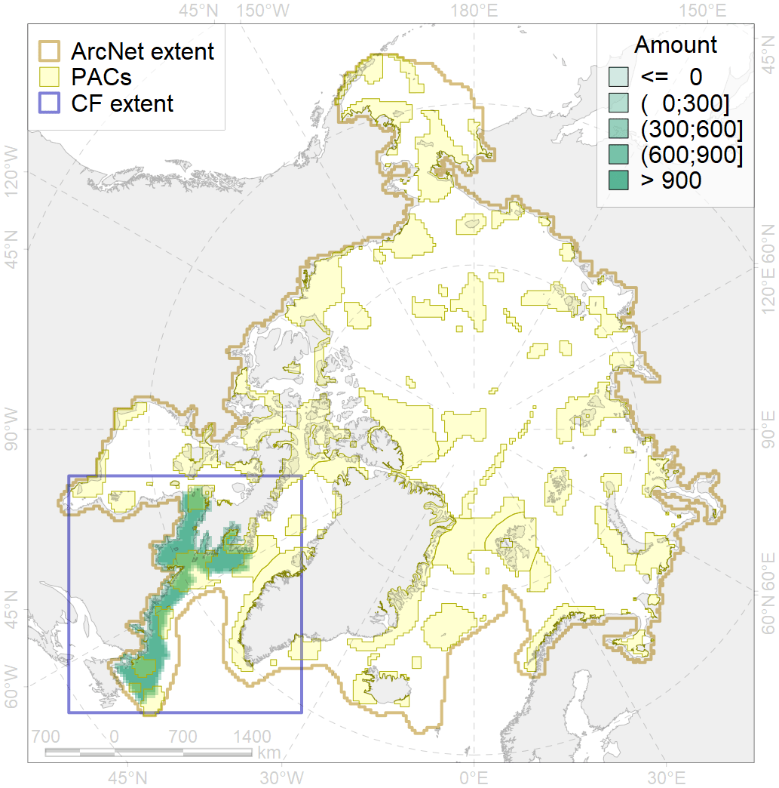
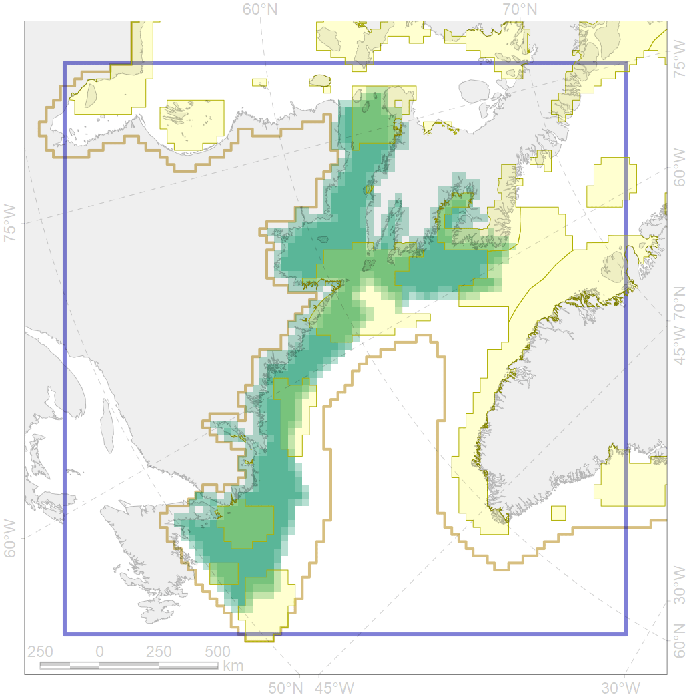

7047

| CF ID | 7047 |
| CF Name | Labrador - Hudson Strait transitional zone |
| Time Period | 1900-2010 |
| Source(s) | Spiridonov et al., in prep. |
| Seasonality | January - December |
| Depth Horizon | Sea floor |
| Methodology | Boundaries derived from biogeographic regionalization scheme, which is in preparation for publication |
| Author Name | V. Spiridonov |
| Notes | |
| Conservation Target Set in the Scenario | 0 |
| Conservation Target Achieved in the Scenario | NaN (Scenario: Inf%) |
| PAC ID | Proportion in the PAC | Contribution to ArcNet Target Achievement | PAC’s Contribution to the Achieved Target |
|---|---|---|---|
| 45 | 2.0% | Inf% | 4.3% |
| 46 | 3.4% | Inf% | 7.5% |
| 73 | 5.2% | Inf% | 12.2% |
| 75 | 0.1% | Inf% | 0.2% |
| 76 | 14.9% | Inf% | 34.8% |
| 77 | 3.6% | Inf% | 8.0% |
| 78 | 0.1% | Inf% | 0.2% |
| 79 | 6.0% | Inf% | 12.4% |
| 80 | 1.4% | Inf% | 3.1% |
| 81 | 1.7% | Inf% | 2.7% |
| inner | 38.5% | Inf% | 85.3% |
| outer | 61.5% | Inf% | 14.7% |